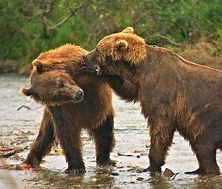
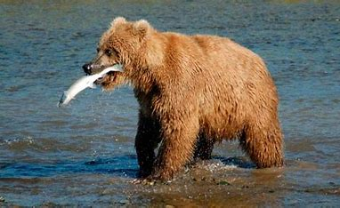

El oso o también llamado ursido, es un prominente animal del bosque que proviene de la extensa familia de mamíferos carnívoros que existen en el planeta. Aunque esté metido en este género de manera categórica hay que contar y decir que en realidad son omnivoros ya que tanto pueden llegar a comer lo que se alimentan de la vegetación que tienen alrededor. Existen varios tipos de especies diferentes de osos por lo que se dice de este que a lo largo de los años es uno de los animales con capacidad evolutiva muy desarrollada y preparada. Esto es debido al gran volumen de especies diferentes que existen repartidas por todo el mundo, siendo este último dato fundamental a lo que se está diciendo.
Entre todos y cada uno de ellos sí que es cierto que su aspecto físico se nota a la legua que provienen de la misma familia, pero el desarrollo y evolución de cada uno se puede observar sin ningún problema las diferencias que tienen entre ellos, por ejemplo: Hay osos que han aprendido a pescar para poder alimentarse y otros en cambio han desarrollado lenguas de larga distancia para poder llegar a comer hormigas. En los últimos años, y por culpa de nosotros los humanos, este animal está cogiendo fama de ser peligroso y violento, cosa que es cierta, pero somos nosotros los principales causantes de que estos nos ataquen. Cada vez más nos adentramos en sus habitats ocupando su espacio, ya sea para hacer excursiones o pasar un fin de semana no son ellos los que vienen a nuestras casas a invadirnos, hay que recordar esto. Los otros son animales solitarios y por lo tanto si se sienten amenazados harán todo lo posible para protegerse a sí mismo.
Con un promedio de casi media tonelada de peso y con una altura que rozan los 2 metros estos gigantescos y peludos oseznos se les considera como uno de los mamíferos terrestres más grandes y violentos. Tanto el peso como el tamaño puede variar en función de la especie de oso que te encuentres ya que por ejemplo los famosos osos polares blancos se tiene constancia de qué llegan alcanzar los 750 kg de peso y hasta más de 2 metros y medio de altura, una verdadera salvajada. Lo más curioso de sus tamaños corporales es de cómo se componen, ya que aunque tengan esas envergaduras tan voluminosos puede hacer gracia verlos por sus patas extremadamente cortas en relación a su cuerpo.
Existen muchas especies diferentes de osos prácticamente todos no se salvan de pesar menos de 100 kg a no ser que estemos hablando de oso americano pero de normal pueden llegar a alcanzar entre los 250 kg y los 600.
Los hábitats naturales de los osos tienen una gran diversidad de ya que hay muchos que los puedes encontrar en bosques frondosos llenos de vegetación y vida y otros en las zonas más gélidas y poco pobladas del planeta. Como puedes ver su distribución geográfica es tremendamente amplia pudiendo encontrar especies en cualquier país del mundo salvo en dos continentes en concreto: África y Oceanía.
Los osos son animales que en condiciones perfectas pueden llegar a vivir hasta los 25 años sin ningún tipo de problema pero por desgracia sus hábitats naturales aunque ellos mismos estén por encima de la cadena alimenticia de prácticamente todos los seres vivos que le rodean no suelen llegar hasta esa edad.
